Devops 101
teosocs.github.io/devops-unipdChi sono
Sono Matteo Sovilla, lavoro in InfoCamere da 7 anni.
InfoCamere è la società consortile delle Camere di commercio e fornisce servizi a favore di imprenditori, professionisti e cittadini.
Chi sono
Capirete abbastanza bene di cosa mi occupo
durante questa presentazione
Per qualsiasi dubbio scrivetemi a matteo.sovilla@infocamere.it
Alcuni metodi sono migliori di altri
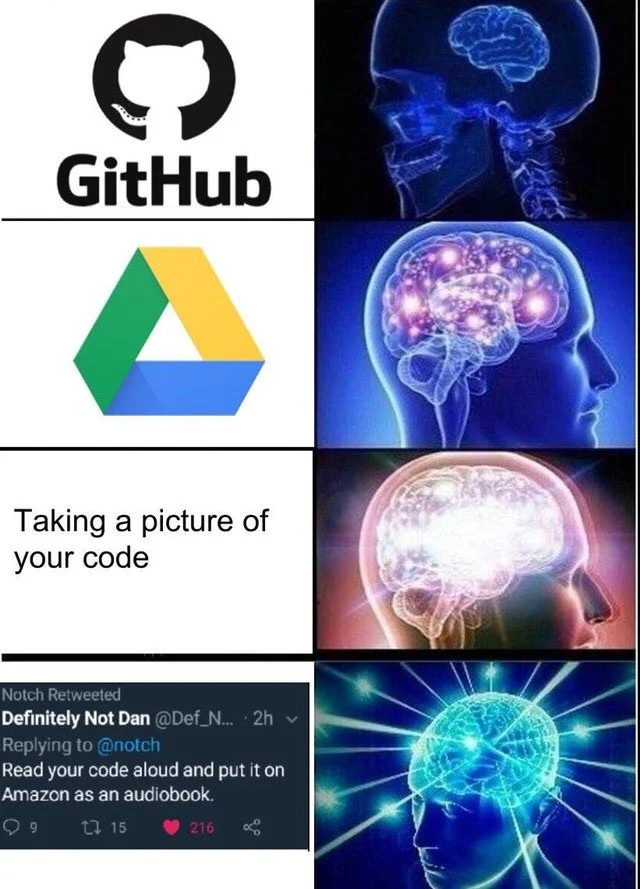- Il codice è salvato in formato analizzabile
- Si può ricostruire la storia completa del codice
- È (relativamente) semplice collaborare
...relativamente...
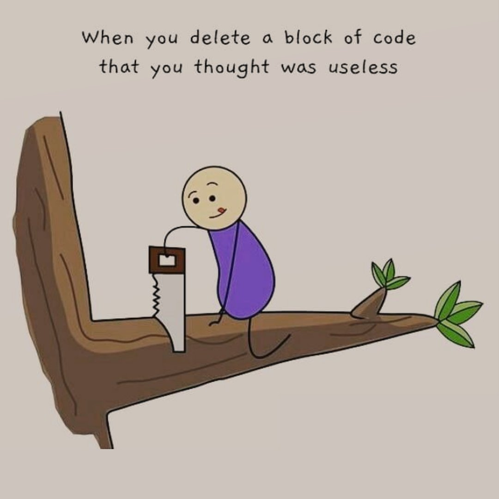Magari il codice compila, ma siamo
davvero sicuri di ciò che fa a
runtime?
...SICURI?
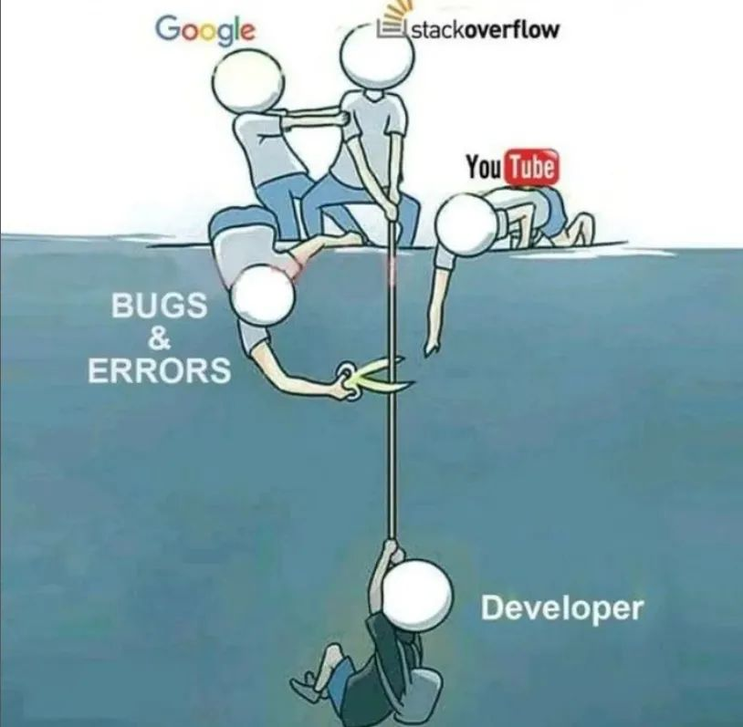- Sono siamo sicuri che vengano fatti?
- Riusciamo a testare tutto?
- Test di unità
- Test di integrazione
- Possiamo minimizzare il disservizio?
Test automatici
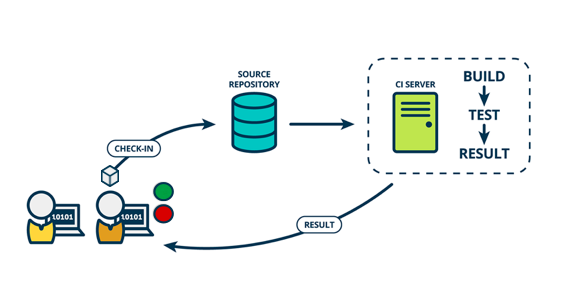Almeno almeno siamo sicuri che vengano fatti
Problema
come minimizziamo il disservizio
3-tier architecture
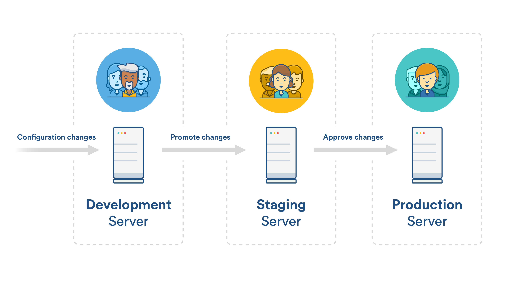CI/CD
È un sacco di lavoro: meglio automatizzare!
Si parla di Continuous Integration e Delivery/Deployment
Problema
- "Vulnerabilità: bisogna aggiornare a Java 11"
- "La mia applicazione funziona solo con Java 8"
- "8? La mia è ferma alla 6"
- "I miei data scientist hanno un progetto in Python"
- "E se usassimo Go?"
Problema
"Non so perché non stia funzionando, sulla mia macchina gira perfettamente"
Problema
"Com'è che gli sviluppatori hanno tutte le belle cose presentate prima e i sistemisti no?"
Configurare un server è un lavoraccio
- costruire da zero un complesso residenziale
- arredarlo in modo appropriato alle esigenze di ciascun ospite
- dover risolvere eventuali litigi tra i diversi ospiti
Approccio alternativo
Container 101
- Unità isolate
- Comprendono le dipendenze a loro necessarie
- Possono "bucare" l'isolamento solo tramite aperture ben definite
- Sono creati a partire da file
- Non sono (solo) docker
Esempio di Docker run
Esempio di Dockerfile
Serve un orchestratore

...e qui comincia la lotta per la sopravvivenza
...in realtà abbiamo un vincitore abbastanza chiaro. (2021)
Dichiarativo e "as code"
...quindi posso impostare flussi di CI/CD! Contrazioni sempre di moda: si parla di GitOps
Contrazioni sempre di moda: si parla di GitOps
Tirando le fila
- Estremamente potente
- Estremamente complicato
- Qualitativamente allo stato dell'arte
- Estremamente complicato (sì, due volte)
Applicazioni fortemente distribuite: Pro
- Componenti "piccole" più semplici
-
Componenti indipendenti in termini di:
- Rilasci
- Scalabilità
- Tecnologia
- Risorse particolari
- Distribuzione geografica
Applicazioni fortemente distribuite: Contro
-
La persistenza è un problema
- In termini di sessione
- In termini di storage
- Interfacce: ogni componente è di fatto un'applicazione a sé
- Monitoraggio, debug e logging complicati
Problema
La mia applicazione non sta funzionando a dovere. Cos'è andato storto?
Architettura a microservizi

Già sembra complicata: considerate di avere più repliche per servizio.
!!!
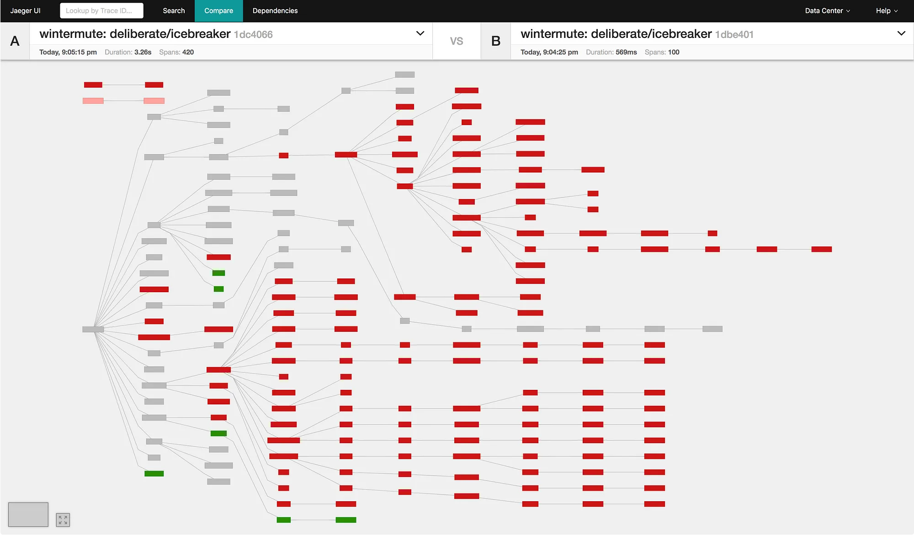Almeno 2 topic chiave
- Log da centralizzare
-
Monitoring e gestione degli alert
- Visibilità dei flussi applicativi
Logging

Una soluzione: ELK
Flusso in ELK
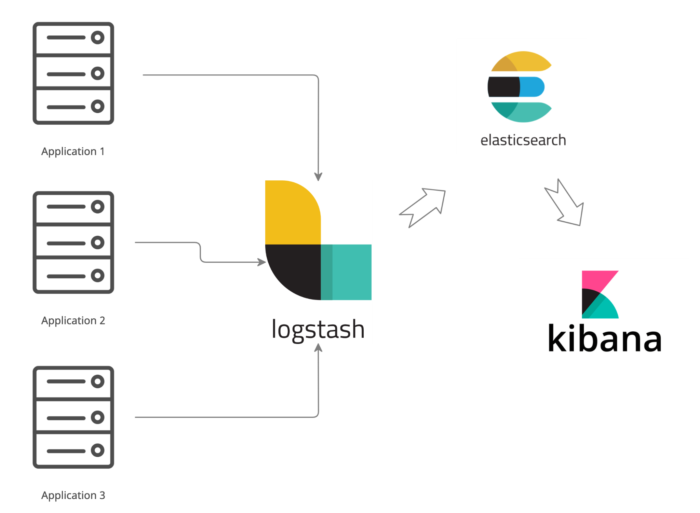Schermata tipo in Kibana
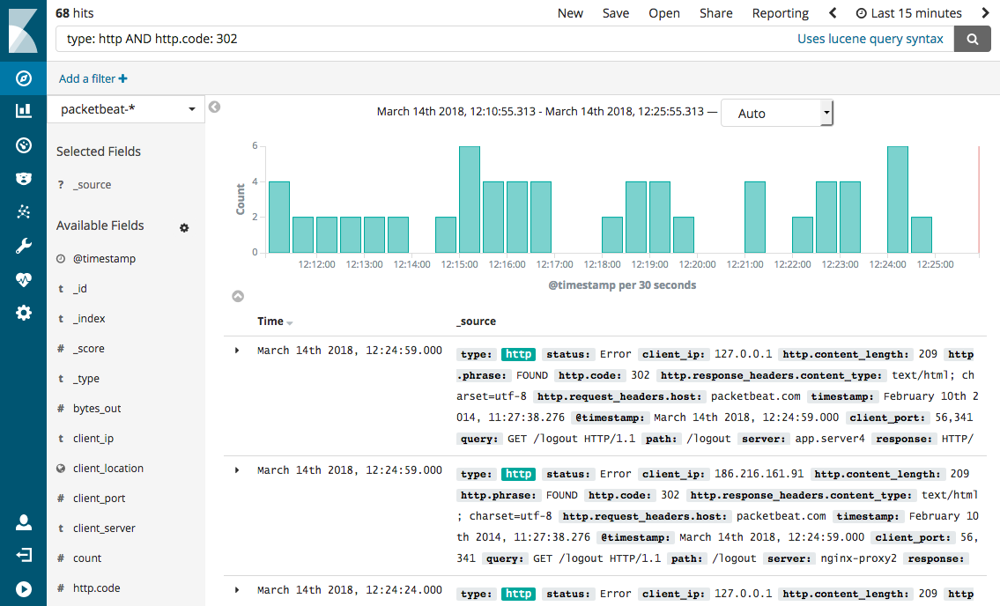Monitoring & Alert management
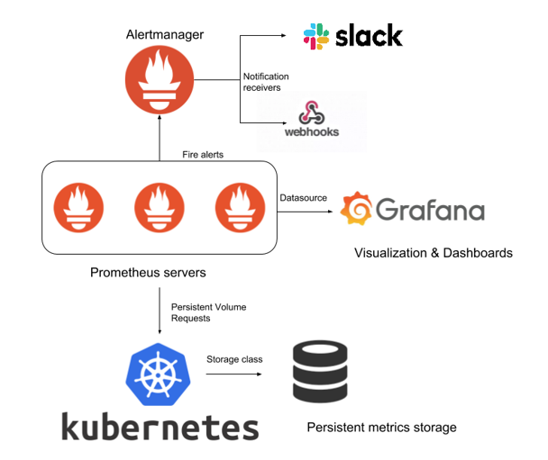Dashboard in Grafana
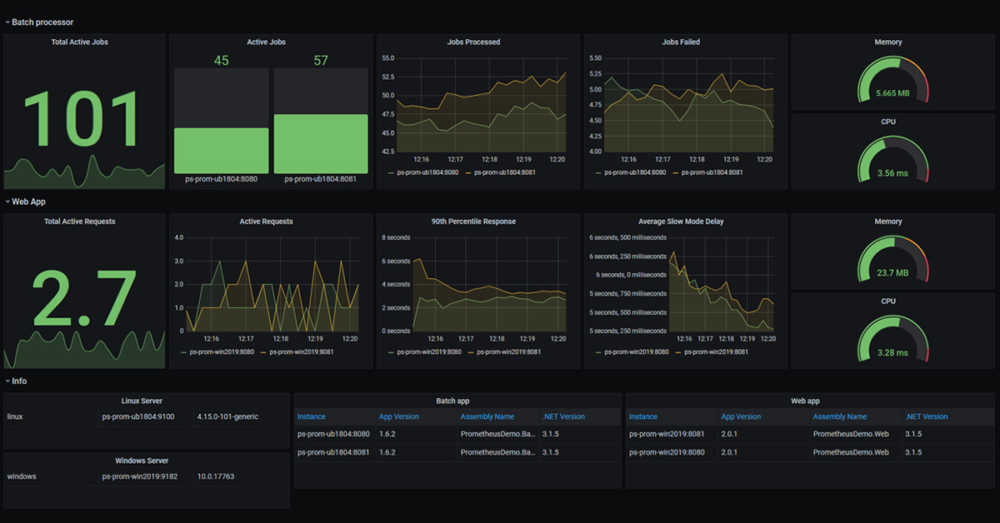Bonus: Jaeger
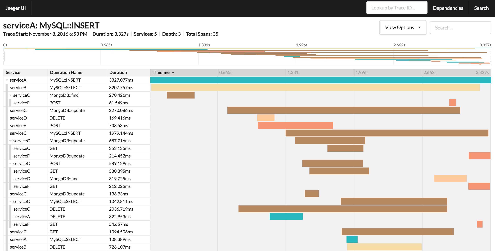Dependency graph
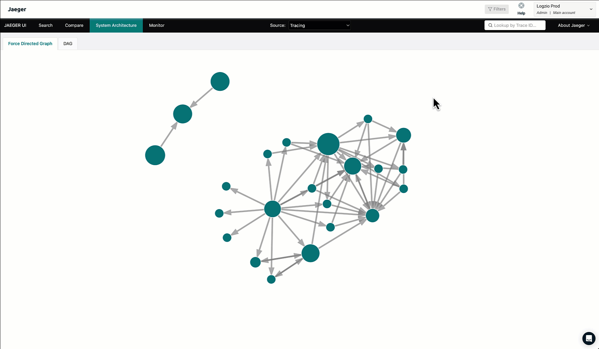Problema
| Dovevo fare a mano i test | Automatizzato |
| Dovevo configurare a mano i servizi | Automatizzato |
| Devo installare a mano i cluster | Ma vi pare? |
Everything as code
"Cluster" as Code
- Tutto il cluster (incluso il control plane) strutturato a container
- Funzionalità particolari svolte da "operator"
Everything as code
Infrastructure as Code
- "Solito" approccio dichiarativo
- "Soliti" file di configurazione
- "Solita" natura stateless
- "Soliti" benefici
Strumenti per IaC
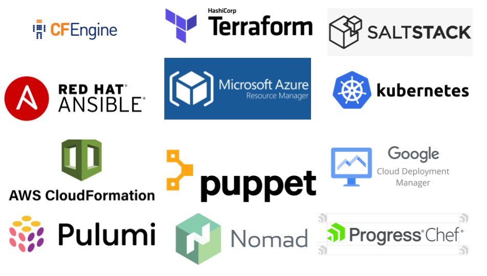Everything as code
Network as Code
- Service Mesh
- Cloud Native Network
Esempio di Service Mesh

Effetto collaterale (piacevole)
Siamo sempre più "distanti" dai server sottostanti
(C'era un) Problema
In caso di carichi di lavoro variabili come "scalo"?
-
Verticalmente
- Aggiungo RAM/CPU ai server che già ho
- Faccio direttamente server più grossi
-
Orizzontalmente
- Metto in esecuzione molti server uguali
(C'era un) Problema
In ogni caso devo comprare del "ferro":
- Potrebbe servirmi molto in fretta
- Potrebbe non servirmi più a breve
La soluzione

Perché è bello
- Quasi annullato il problema dell'hardware
- Abbondanza di servizi gestiti
- Elevatissima standardizzazione
Perché è brutto
-
...da qualche parte devono pur guadagnarci
- Rischi ENORMI sui costi
- Rischio di vendor lock-in
- Temi da smarcare sulla riservatezza dei dati
- Difficile da padroneggiare
Meglio in cloud?
Dipende:| Azienda senza "ferro" | Cloud |
| Frontend | ~Cloud |
| Backend e storage | ~No cloud |
Insomma: tanto
Tanto da studiare, tanto da imparare,
tanto da provare, tanto da fare.
Cerchiamo compagnia
Grazie, e a presto.